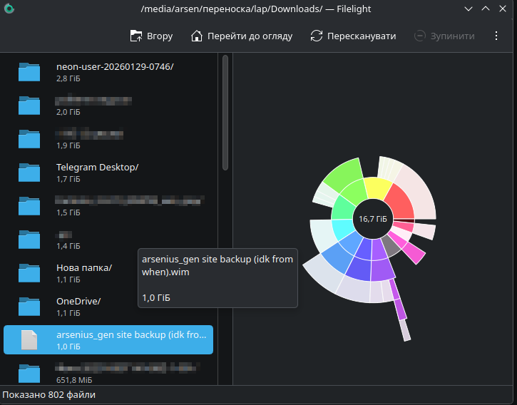

:/

For me from future: redeploy this backup right there ^
I hope I have preserved at least most of the things that accumulated across years there...
Still, you can test the FluxDrop Preview Program there:
Also, you can check the server health:
Notes about the FluxDrop: you can register, and it will actually send an confirmation email, and you can use it for file sharing and storing, but btw, I'm not taking an responsibility if files would be lost or anything may happen to the server/files/user account - this is preview program and it's actually an alpha test of the entire system that will be used as supporter system for CatBox, including some kind of charity to CatBox when I'll implement payment system for the FluxDrop somewhere in the future))
To test the FluxDrop Preview Program, you can use next account credentials for testing purposes:
login: testprofile passw: supersecurepasswordGitHub repo: https://github.com/ArsenijN/server
Please read To-Do to be able to understand what's missing from the final flavor or FluxDrop - new inspiration ideas and feature requests is welcome